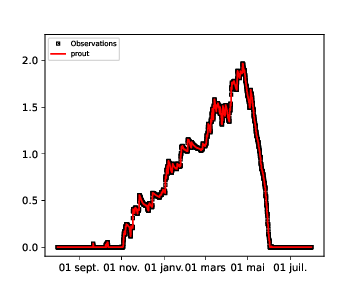
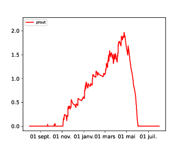

Temporal plots¶
Deterministic plots¶
Base temporal plots are in the module plots/temporal/chrono.
Created on 4 déc. 2018
This script contains classes allowing to make matplotlib graphs with an automatic formatting of the temporal axis in order to adapt to simulation temporal extent.
@author: lafaysse
- class plots.temporal.chrono.temporalplot2Axes(*args, **kwargs)[source]¶
Bases:
temporalplotKept for bakward compatibility LM2B = Looks Broken to Me
Constructor for temporalplot_abstract class, redefinied for the child class
- class plots.temporal.chrono.temporalplotObsMultipleSims(*args, **kwargs)[source]¶
Bases:
temporalplotKept for bakward compatibility , please refer to temporalplotObsSim Similar to temporalplotObsSim but UGLIER
Constructor for temporalplot_abstract class, redefinied for the child class
- draw(timeObs, varObs, timeSim, varSim, *args, **kwargs)[source]¶
Method of temporalplotObsMultipleSims class. Used for generating comparative 1D plot with time formatting. Similar to temporalplotObsSim but UGLIER
- Parameters:
timeObs – Array of Observation duration usually given by prosimu.readtime()
varObs – Array of Observation data usially given by prosimu.read()
timeSim – Array of simulation duration usually given by prosimu.readtime()
varSim – Array of simulation data usially given by prosimu.read()
args – (optional)
kwargs – optional ( matplotlib.pyplot key arguments )
- Returns:
- class plots.temporal.chrono.temporalplotObsSim(*args, **kwargs)[source]¶
Bases:
temporalplotClass for 1D variable temporal plot comparaison with observation
Example :
from snowtools.utils.prosimu import prosimu from snowtools.plots.temporal.chrono import temporalplotObsSim # read data with prosimu('/rd/cenfic3/cenmod/home/viallonl/testbase/PRO/PRO_LaPlagne_2000-2001.nc') as p: sd = p.read('DSN_T_ISBA') sd2 = p.read('SNOWTEMP') time = p.readtime() plot = temporalplotObsSim() plot.draw(time, sd,time,sd,label='prout') # comparaison of sd with sd during the same time plot.finalize(time) # pour gérer les dates correctement plot.save('EX-temporalplotObsSim.png')

Constructor for temporalplot_abstract class, redefinied for the child class
- draw(timeObs, varObs, timeSim, varSim, *args, **kwargs)[source]¶
Method of temporalplotObsSim class. Used for generating comparative 1D plot with time formatting.
- Parameters:
timeObs – Array of Observation duration usually given by prosimu.readtime()
varObs – Array of Observation data usially given by prosimu.read()
timeSim – Array of simulation duration usually given by prosimu.readtime()
varSim – Array of simulation data usially given by prosimu.read()
args – (optional)
kwargs – optional ( matplotlib.pyplot key arguments )
- Returns:
- class plots.temporal.chrono.temporalplotSim(*args, **kwargs)[source]¶
Bases:
temporalplotClass for 1D variable temporal plot
Example :
from snowtools.utils.prosimu import prosimu from snowtools.plots.temporal.chrono import temporalplotSim # read data with prosimu('/rd/cenfic3/cenmod/home/viallonl/testbase/PRO/PRO_LaPlagne_2000-2001.nc') as p: sd = p.read('DSN_T_ISBA') sd2 = p.read('SNOWTEMP') time = p.readtime() plot = temporalplotSim() plot.draw(time, sd,label='prout') plot.finalize(time) # pour gérer les dates correctement plot.save('EX-temporalplotSim.png')

Constructor for temporalplot_abstract class, redefinied for the child class
- draw(timeSim, varSim, *args, **kwargs)[source]¶
Method of temporalplotSim class. Used for generating a 1D plot with time formatting.
- Parameters:
timeSim – Array of simulation duration usually given by prosimu.readtime()
varSim – Array of simulation data usially given by prosimu.read()
args – (optional)
kwargs – optional ( matplotlib.pyplot key arguments )
- Returns:
Ensemble plots¶
Ensemble plots are in the module plots/temporal/escroc_plot.
Created on 4 déc. 2018
@author: lafaysse
Comparison tool¶
To compare two simulations, a script is available in plots/temporal/compare_sims.py.
Script plots/temporal/compare_sims.py help:
Usage: compare_sims.py [-b YYYYMMDD] [-e YYYYMMDD] --dirsim=dirsim1,dirsim2 --labels=label1,labe2 --dirplot=dirplot --format=pdf,png,eps --yearly
Options:
-h, --help show this help message and exit
-b DATEBEGIN, --begin=DATEBEGIN
First year of extraction
-e DATEEND, --end=DATEEND
Last year of extraction
--pro=PRO List of pro files to compare
--labels=LABELS Labels of simulations in the plot
--var=VAR Name of variable to plot
--dirplot=DIRPLOT Directory where the figures are saved
--format=FORMAT Format of plots
--yearly Yearly plots
Demo files¶
A demo file is available in plots/temporal/demo.py. A file for plots for COMOD is also is in plots/temporal/impact_comod.py.